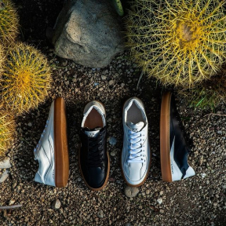
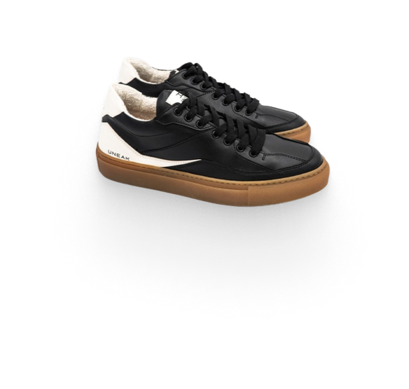

Sneakers which will change your next step making it more sustainable, animal friendly,
conscious

We realize quite well that shoes are one of the most consumed products
within the
industry of fashion, which means volumes can be important, which is a big social responsibility.
Juarez is the name of the first
sustainable sneaker shoes model from UNEAK,
a new italian sustainable fashion brand, born from
the ideas of Sonia and Davide.
The Juarez sneaker model features certified sustainable materials
It’s produced completely in Italy, in a warm region where all workers live very close to the production site.
THE PROCESS
We reviewed the entire traditional shoe production process
JUAREZ: White
We use synthetic cactus based upper material

JUAREZ: Black and White
We gather materials for the JUAREZ sneaker locally